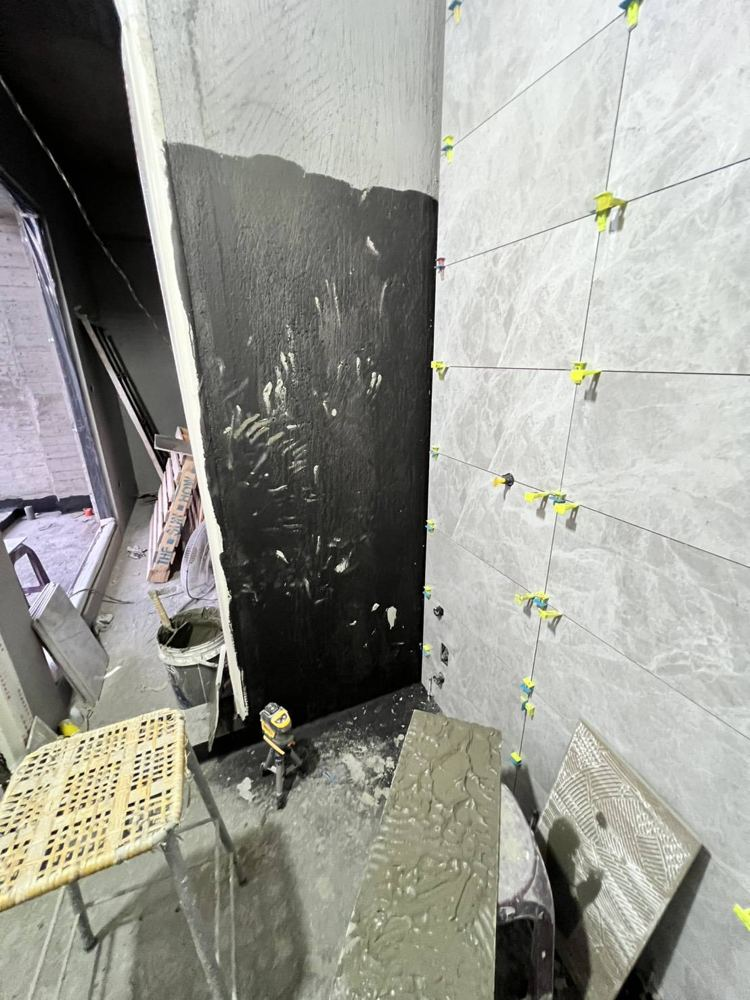

透天外牆會不會漏水？蓋新房子時，防水要做在哪裡
老透天住久了，最怕的就是漏水：牆壁長壁癌、天花板一圈水漬、下大雨窗邊就滴。所以準備重建的屋主幾乎都會問：新房子會不會又漏？
一句話回答：防水不是最後刷一層就好，而是從結構、外牆、窗框到浴室，每個容易進水的地方都要分開處理。
一、水最常從哪裡進來？
- 外牆的裂縫：混凝土和磁磚會熱脹冷縮，時間久了出現細縫，雨水順著縫滲進牆裡。
- 窗框四周：窗框和牆之間的縫隙，是外牆最常漏水的位置。
- 屋頂和女兒牆：屋頂長時間曬太陽、積水，女兒牆和地板的轉角最容易出問題。
- 浴室和陽台：天天碰水，防水沒做好，水會滲到樓下或隔壁房間。
二、外牆防水：在貼磚或塗裝之前先做
- 結構體完成後，外牆在貼磚、上漆之前，會先整面塗上防水層。等外牆完工就蓋住了，之後看不到。
- 防水層要整面連續，轉角、牆面接縫、管線穿牆的洞口要特別加強。
- 做完之後才貼磚或上外牆塗料；外牆完成面是第一道擋雨，防水層是第二道。

三、窗框：先塞縫，再做防水
- 窗框裝好後，框和牆之間的縫要用水泥砂漿確實填滿，不能留空隙。
- 窗框外圍再做一圈防水加強，最後才收邊；窗台做出往外的洩水坡度，水才不會往室內流。
四、屋頂、浴室、陽台：牆角要往上多做一段
- 地板防水做完，牆面也要往上延伸一段；浴室淋浴區通常做得更高，因為水會噴到牆上。
- 地板做出排水坡度，水才會流向排水孔，不會積在角落。
- 浴室防水做完、貼磚之前，可以先放水測試一段時間，確認樓下沒有滲水再繼續。

屋主可以怎麼確認？
- 防水做完會被磁磚、塗料蓋住，完工後就看不到了。施工期間可以請營造廠拍照記錄每一處防水施作。
- 交屋前遇到大雨，可以到窗邊、屋頂、浴室天花板看看有沒有水痕。
我們遇過的實例
西屯一間重建的透天厝，在外牆貼磚、上仿石漆之前，先整面施作防水層；浴室也是先做防水再貼磚。
防水材料與做法依建築師設計、現場條件與施工規範而定。